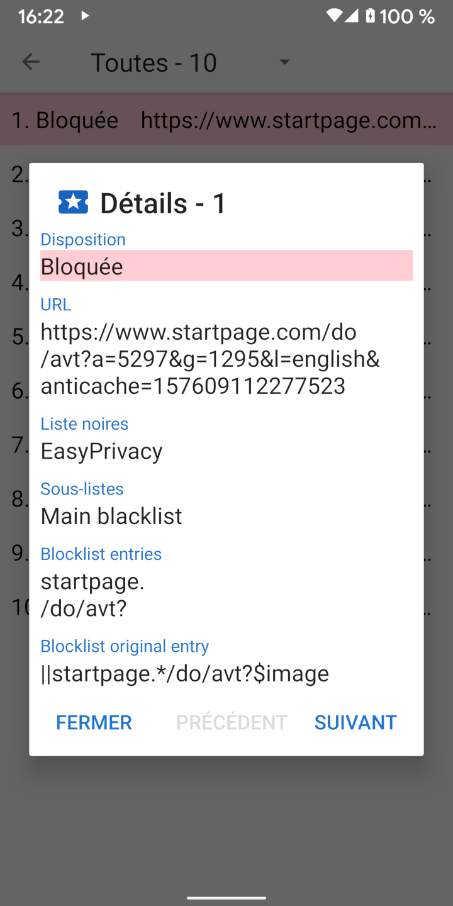

Lorsqu'une URL est chargée, elle effectue généralement un certain nombre de requêtes de ressources pour le CSS, JavaScript, des images et d'autres fichiers. Les détails sur ces requêtes peuvent être consultés dans la vue Requêtes. Le panneau de navigation contient un lien vers la vue Requêtes et indique également le nombre de requêtes bloquées. Un appui sur une requête affiche les détails de la raison pour laquelle elle a été autorisée ou bloquée.
Privacy Browser inclue quatre listes communes de filtres basées sur la syntaxe d'Adblock: EasyList, EasyPrivacy, Fanboy’s Annoyance List, and Fanboy’s Social Blocking List. Ces listes de filtres sont traitées par Privacy Browser dans les 22 sous-listes suivantes, qui vérifient les demandes de ressources dans l'ordre indiqué.
Les listes initiales sont comparées au début de l'URL. Les listes finales sont comparées à la fin de l'URL. Les listes de domaines ne vérifient que certains domaines. Les listes tierces ne s'appliquent que si le domaine racine de la demande est différent du domaine racine de l'URL principale. Les listes d'expressions régulières respectent la syntaxe d'expression régulière. Chaque élément de sous-liste comporte une ou plusieurs entrées. Dans le cas de sous-listes de domaines, la demande de ressource n'est vérifiée par rapport à l'élément que si la première entrée correspond au domaine de l'URL principale.
En raison des limitations de WebView d'Android et pour accélérer le traitement des requêtes, Privacy Browser met en œuvre une interprétation simplifiée de la syntaxe Adblock. Cela peut parfois conduire à des faux positifs, lorsque des ressources sont autorisées ou bloquées d'une manière qui n'était pas prévue par l'entrée d'origine. Une description plus détaillée de la manière dont les entrées de la liste de filtres sont traitées est disponible à l'adresse suivante stoutner.com.
Privacy Browser possède trois listes additionelles de filtres.
UltraList et
UltraPrivacy
filtrent les publicités et les traqueurs, ce que ne font pas EasyList et EasyPrivacy. Le troisième bloque toutes les demandes émanant de tiers.
Une requête n'est considérée comme tierce que si le domaine de base de la requête est différent du domaine de base de l'URL.
Par exemple, si www.siteweb.com charge une image de images.siteweb.com,
cette demande n'est pas bloquée en tant que demande d'un tiers parce qu'ils partagent tous deux le même domaine de base de siteweb.com.
Le blocage de toutes les demandes émanant de tiers renforce la protection de la vie privée,
mais cette liste de filtres est désactivée par défaut parce qu'elle perturbe un grand nombre de sites web.